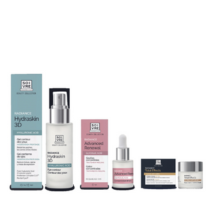

Beneficios
El seguimiento farmacoterapéutico (SFT) y la realización de sistemas personalizados de dosificación (SPD) son herramientas de prevención y aumento de seguridad del paciente comprobadas en los grupos de población de edades avanzadas en los que aparece la cronicidad y la polimedicación. Actualmente existe una necesidad de extender estos servicios a pacientes con enfermedades avanzadas, situaciones de soledad o reducida movilidad a través de la Atención farmacéutica Domiciliaria (AFD).
Objetivos
identificar los principales beneficios que ofrecen los servicios de Atención Farmacéutica como SFT, SPD y de AFD (Atención Farmacéutica Domiciliaria) realizados en farmacia comunitaria y dirigidos a pacientes crónicos, polimedicados y de edades avanzadas. Analizamos la importancia de la conciliación, los cambios de tratamiento, la detección de interacciones y del cumplimiento.
Importancia

Ofrecer cobertura al 100% de los consumidores en que acudan a nuestra Farmacia ( todo aquel que reciba un medicamento debe haber tenido la oportunidad de ser aconsejado en el proceso, independientemente de si éste es el cliente habitual u ocasional de esta farmacia). Por tanto, esto nos compromete igual con usuarios habituales que a con usuarios «de paso », así como los envíos a residencias, centro sociosanitarios o particulares.
Lineas

Capilar
Ofrecemos en La línea Capilar productos para la higiene, cuidado y protección del cabello, reforzando el equilibrio del cuero cabelludo. Todos los champús están formulados con una base tensioactiva muy suave que evita la irritación del cuero cabelludo, respetando su pH natural...MÁS

Cosmeticos
Ofrecemos envases para productos cosméticos en diferentes tamaños, materiales y capacidades en diseños atractivos y de fácil uso....MÁS

Facial
Encuentra todo lo que necesitas para tu rostro con nuestra línea de productos para el cuidado facial con Neutrogena® y disfruta de una piel suave....MÁS
Vitaminas
Ofrecemos cualquier tipo de vitaminas provinientes de alimentos....MÁS
Medicamentos
Te ofrecemos todo tipo de medicamentos como...MÁS